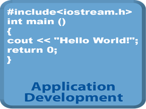

Deepam Ahuja
The Cloud Job Shadow
Home
Profile
Connect

New Job Shadow Request
Pillar:
Upcoming Job Shadows
Infrastructure - Job Shadow 10/01/2013 @ 4:00 pm
CP&A - Job Shadow 10/07/2013 @ 2:00 pm
Application Development - Job Shadow 11/01/2013 @ 4:00 pm
Security - Job Shadow 12/01/2013 @ 12:30 pm
Job Shadows History
Quality Assurance - Job Shadow 07/01/2013 @ 12:30 pm
Enterprise Information Management- Job Shadow 03/01/2013 @ 4:30 pm
Strategic Services - Job Shadow 02/01/2013 @ 9:00 am
Operations - Job Shadow 05/01/2013 @ 3:30 pm
Team Members:
Deepam Ahuja
Updates
@ 09/10/2013 - Now user are able to request mentors
@ 09/11/2013 - Users can now link their Connect profile to the Job Shadow profile
About The Hack